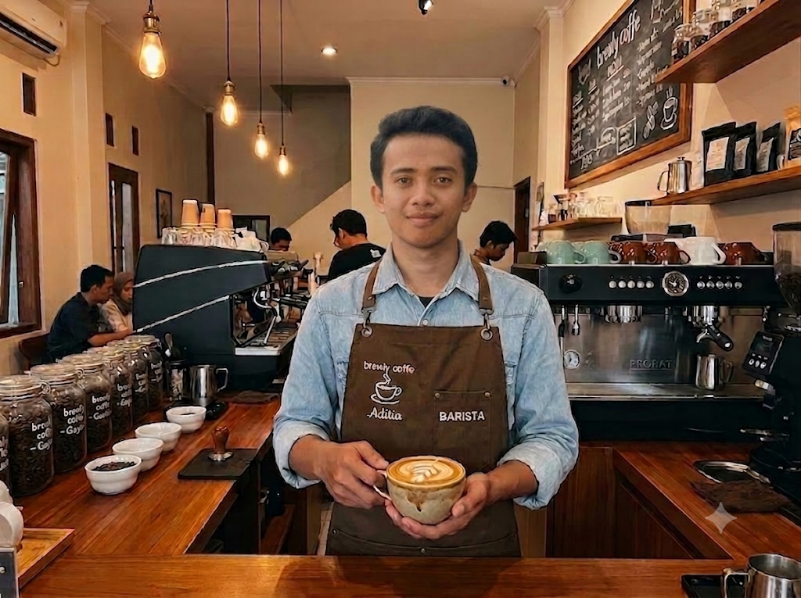
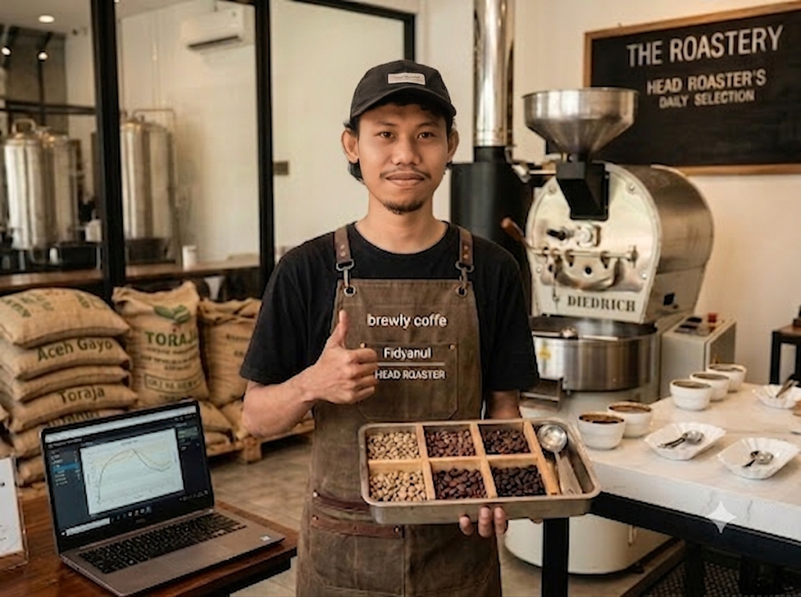
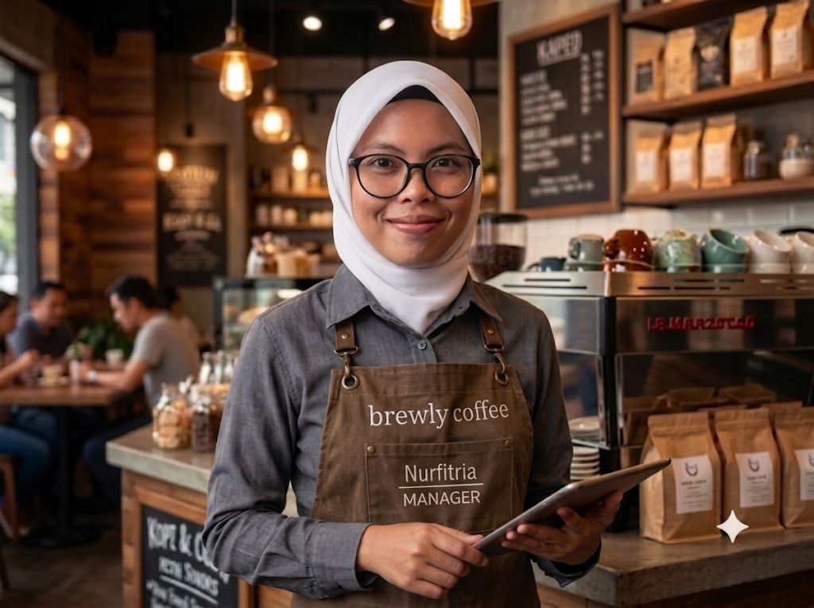

Kelompok 1 · Kelas Informatika 4B
Tentang Kelompok
Brewly Coffee lahir dari semangat dan kreativitas tiga mahasiswa Informatika 4B yang percaya bahwa teknologi dan seni bisa berpadu indah — seperti kopi dan susu. Website ini adalah wujud nyata dedikasi kami dalam mempelajari dunia perancangan web yang kami tuangkan dengan sepenuh hati.

Maestro di balik cangkir. Aditia adalah jiwa kreatif yang menghidupkan setiap menu dengan teknik seduhan dan latte art yang memukau.

Sang penjaga cita rasa. Fidyanul memastikan setiap biji kopi melewati proses roasting yang sempurna sebelum sampai ke tangan pelanggan.

Nahkoda operasional cafe. Fitria memastikan pengalaman setiap pelanggan terasa mulus, hangat, dan selalu berkesan dari awal hingga akhir.